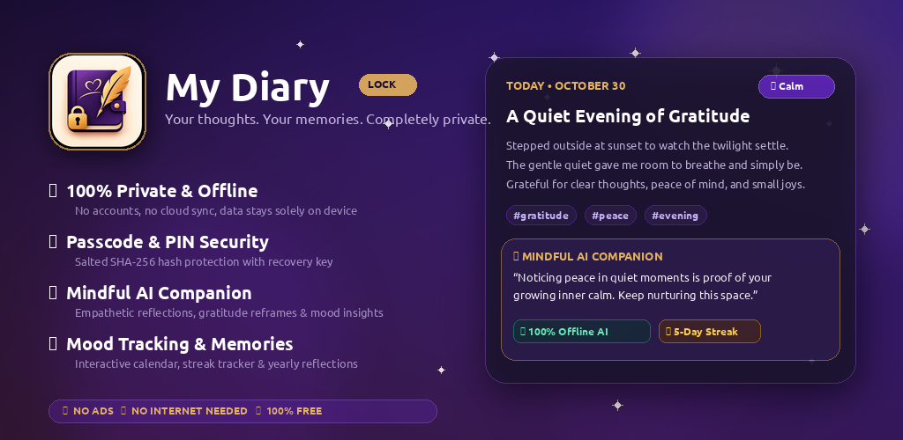

Your Thoughts.
Your Memories.
Your Private Space.
A serene, distraction-free digital journal built for Android. Protected by PIN lock and salted SHA-256 encryption. Completely private, offline, and ad-free.

Everything You Need for Mindful Writing
No subscriptions, no login screens, and no social feeds. Just an elegant diary created to help you reflect with clarity.
100% Offline & Private
Works completely without internet, remote servers, or logins. All diary records, photos, and settings remain solely inside your physical phone's SQLite database.
PIN & Biometric Lock
Protect your private reflections with a 4-digit PIN secured via salted SHA-256 cryptographic hashing, fingerprint unlock, and deliberate recovery question.
Mindful Prompts & Reflection
Thoughtful writing prompts to help you overcome writer's block, practice daily gratitude, and discover meaningful lessons from your day.
Mood & Streaks Tracker
Record your feelings across 6 emotional tones. Visualize monthly mood breakdowns, celebrate continuous daily writing streaks, and understand emotional patterns.
Interactive Calendar
Browse past journal entries by date with color-coded mood dots. Rediscover nostalgic "On This Day" memories from previous months and years.
4 Serene Aesthetics
Switch seamlessly between Pure White, Warm Journal, Calm Lavender, and Midnight Diary. Designed with paper-like textures and distraction-free typography.
Empathetic Companion, Zero Network Required
Experience the benefits of emotional reflection without compromising your personal privacy.
Writing Prompt Helpers
Feeling stuck? Tap Overcome Block to receive gentle questions tailored to your mood, Gratitude Reframe to see the silver lining in tough days, or 1-Sentence Lesson to distill wisdom from experiences.
Life Chapter Digests
View periodic Mindful Digests synthesizing your journal entries into a life chapter title, highlights of gratitude, and growth observations—all synthesized completely offline on your device.
Frequently Asked Questions
Yes. The app does not require an internet connection, has no login server, and does not send any of your text, photos, or audio recordings to any remote server. Everything stays on your phone.
Yes! In the Settings screen, tap Export Full Journal (JSON) to save a complete file backup that you can restore onto any new phone in seconds.
You can set up a custom Security Question (e.g. childhood best friend or favorite book) during PIN setup. If you forget your passcode, answering this question lets you safely reset it.
No. My Diary operates 100% offline with zero network calls. All database records, encryption keys, and journal reflections stay strictly on your physical device.